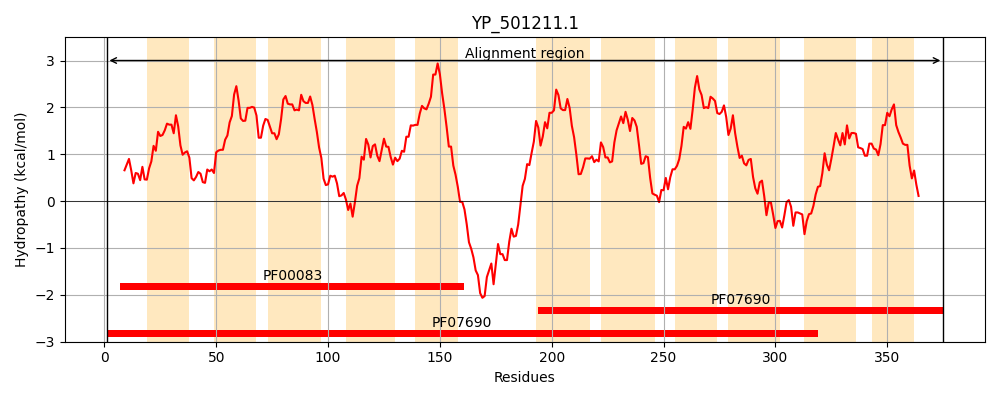
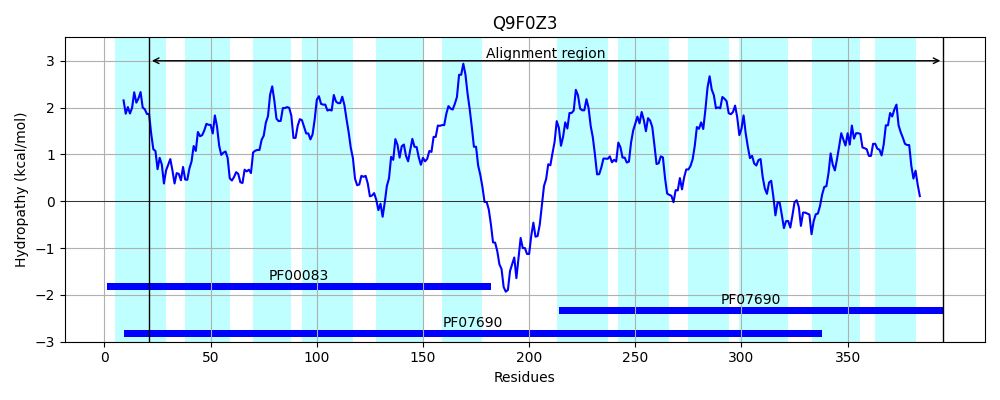
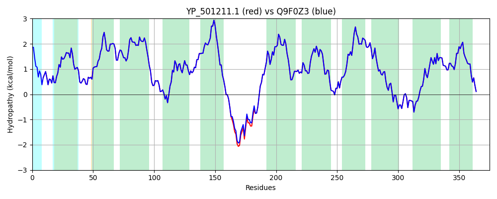

Hit Accession: Q9F0Z3
Hit TCID: 2.A.1.2.101
Hit Description: gnl|BL_ORD_ID|17932 gnl|TC-DB|Q9F0Z3|2.A.1.2.101 Bmr-like protein SblA OS=Staphylococcus aureus GN=sblA PE=4 SV=1
Mach Len: 375
e:0.000000
Query TMS Count : 11
Hit TMS Count: 12
TMS-Overlap Score: 12.250000
Predicted Substrates:None
BLAST Alignment:
Score: 1861 , Bit scores: 721 bits, E-value: 0.0e+00, Alignment length: 375, Percentage identity: 100
Query: 1 MMVAGIMNLMSQDLHVSEAVVGQLVTMYALTFAICGPILVKLTNRFSSRPVLLWTLLIFIIGNGIIAVAPNFSILVVGRIISSAAAALIIVKVLAITAMLSAPKNRGKMIGLVYTGFSGANVFGVPIGTVIGDLVGWRYTFLFLIIVSIIVGFLMMIYLPKDQEIQRGPVNHETPSHENHVTSKILRPAEVAKYLIITFLVLIANSVTFVFINPLILSNGHDMSFVSLALLVNGIAGVIGTSLGGIFSDKITSKRWLMISVSIFIVMMLLMNLILPGSGLLLAGLFIWNIMQWSTNPAVQSGVIQHVEGDTSQVMSWNMSSLNAGIGVGGIIGGLVMTHVSVQAITYTSAIIGALGLIVVFTLKNNHYAKTFKSS 375
MMVAGIMNLMSQDLHVSEAVVGQLVTMYALTFAICGPILVKLTNRFSSRPVLLWTLLIFIIGNGIIAVAPNFSILVVGRIISSAAAALIIVKVLAITAMLSAPKNRGKMIGLVYTGFSGANVFGVPIGTVIGDLVGWRYTFLFLIIVSIIVGFLMMIYLPKDQEIQRGPVNHE PSHENHVTSKILRPAEVAKYLIITFLVLIANSVTFVFINPLILSNGHDMSFVSLALLVNGIAGVIGTSLGGIFSDKITSKRWLMISVSIFIVMMLLMNLILPGSGLLLAGLFIWNIMQWSTNPAVQSGVIQHVEGDTSQVMSWNMSSLNAGIGVGGIIGGLVMTHVSVQAITYTSAIIGALGLIVVFTLKNNHYAKTFKSS
Sbjct: 21 MMVAGIMNLMSQDLHVSEAVVGQLVTMYALTFAICGPILVKLTNRFSSRPVLLWTLLIFIIGNGIIAVAPNFSILVVGRIISSAAAALIIVKVLAITAMLSAPKNRGKMIGLVYTGFSGANVFGVPIGTVIGDLVGWRYTFLFLIIVSIIVGFLMMIYLPKDQEIQRGPVNHEAPSHENHVTSKILRPAEVAKYLIITFLVLIANSVTFVFINPLILSNGHDMSFVSLALLVNGIAGVIGTSLGGIFSDKITSKRWLMISVSIFIVMMLLMNLILPGSGLLLAGLFIWNIMQWSTNPAVQSGVIQHVEGDTSQVMSWNMSSLNAGIGVGGIIGGLVMTHVSVQAITYTSAIIGALGLIVVFTLKNNHYAKTFKSS 395 | Protein Hydropathy Plots: |
|---|
|  |  |
Pairwise Alignment-Hydropathy Plot:
|
|---|
|  |